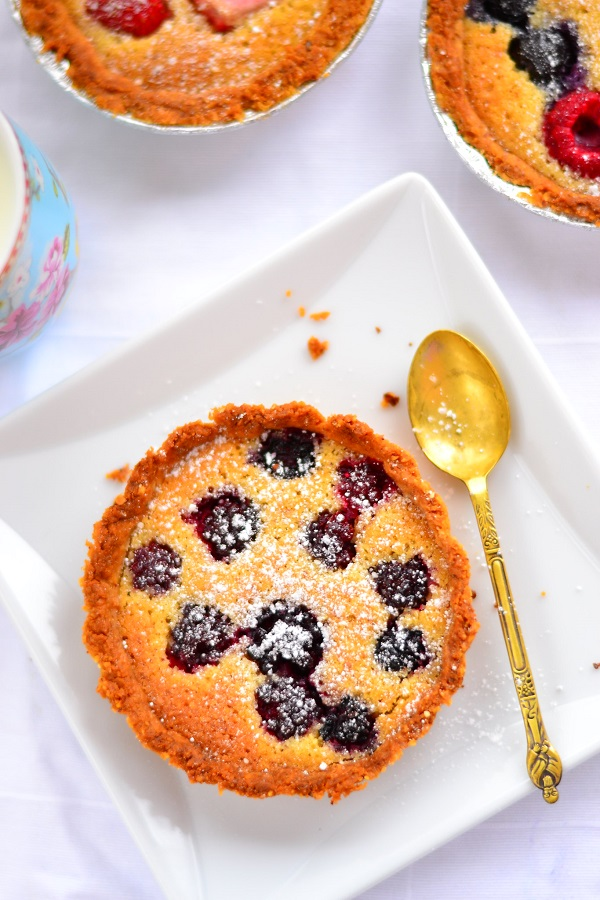

Mandlikook marjadega
| Koostisosad |
Kogus |
| Marjad |
400g |
| Jahu |
200g |
| Mandlijahu |
60g |
| Külm või |
125g |
| Suhkur |
90g |
| Munakollane |
2-3 |
| Toasoe või |
100g |
| Muna |
2 |
| Mandlijahu |
70g |
| Suhkur |
60g |
| Vanilliekstrakt |
1 tl |
Valmistamine
Koogid
- Tee tainas. Selleks sega kokku jahu, mandlijahu, suhkur ja sool. Lisa külm või kuubikutena ja töötle see kiiresti jahusegu sisse. Lisa munakollased ja sõtku need kiiresti taigna sisse. Vormi tainas palliks, keera toidukilesse ja pane tunniks ajaks külmkappi.
- Määri koogivorm võiga (võid kasutada ümmargust koogivormi, madala äärega ristkülikukujulist või hoopis, nagu mina tegin, 6-8 väikest tartletivormi). Rulli tainas kahe toidukile vahel õhukeseks. Tõsta tainas vormi(desse) ja suru ühtlaselt vormi(de) põhja ning külgedele. Tõsta vorm(id) koos taignaga veel 30-40 minutiks külmkappi. Kuumuta ahi 180 kraadini.
- Kata taignaga "polsterdatud" vormid küpsetuspaberiga ja pane küpsetuspaberile mõned kuivatatud oad. Küpseta taignakorvikesi niimoodi kaetult ca 20 minutit. Tõsta ahjust välja ja lase jahtuda.
Mandlikreem
- Sega mandlijahu suhkruga. Lisa pehme või ja sega ühtlaseks. Lisa ükshaaval munad ja sega kreemjaks. Viimasena lisa vanilliekstrakt ja sega veelkord läbi. Jaota mandlikreem korvikeste vahel ära. Lisa igasse korvi peotäis meelepäraseid marju. Küpseta veel 20 minutit kuni kreem on pealt kergelt kuldne.
